CS 1111
Introduction to Software Development
GWU Computer Science
Introduction to Software Development
GWU Computer Science
By the end of this module, for simple programs with real numbers, you will be able to:
If you do not have your Codio course ready, use any text editor or simple IDE. Some possibilities are:
Before we move forward, let's catch up (complete any remaining work from the previous module)
In this case, make sure we've got:
In the previous module, we practiced using methods that resolve (or return) something and that might need input parameters to run.
In this segment we'll practice writing and invoking such methods.
First, two definitions:
1 2 3 4 5 6 7 8 9 10 11 12 13 14 15 16 17 18 | public class IOMethods1 { public static void main(String args[]) { int num1 = 5; int num2 = 13; // Invoke the myOperation method and save result in the num3 variable int num3 = myOperation(num1, num2); // myOperation(num1, num2) resolves into the resulting value System.out.println ("myOperation on " + num1 + " and " + num2 + " is: " + num3); } public static int myOperation(int localNum1, int localNum2) { int localNum3 = (localNum1 * localNum2) - (localNum1 - localNum2); // this causes the method invocation to resolve into localNum3 return localNum3; } } |
Note the following:
localNum1+=99;
localNum2+=99;
then, inside the main, add the following statement:
System.out.println ("num1 after modifying localNum1 is: " + num1 );
System.out.println ("num2 after modifying localNum2 is: " + num2 );
What do you print? why?
Now Look at this program:
1 2 3 4 5 6 7 8 9 10 11 12 13 14 15 16 17 18 19 20 21 22 23 24 25 26 27 28 29 30 | public class IOMethods2 { public static void main(String args[]) { String base = "Pizza should not have pineapple"; String part = "pine"; // Invoke the extract method and save result in out variable String out = extract(base, part); // extract(base, part) resolves into the resulting string System.out.println ("The new String is: " + out); } public static String extract(String localBase, String localPart) { // The return variable String localOut = ""; // Get the index of localPart inside localBase int idx = localBase.indexOf ( localPart ); // Get the size of localPart int partSize = localPart.length(); // copy localBase up to the start of localPart localOut = localBase.substring (0,idx); // copy localBase after localPart until the end of localBase localOut = localOut + localBase.substring (idx+partSize); return localOut; } } |
Activity 3:
In
IOMethods2.java
write the above program and see what gets printed.
Now, let us run it inside the Java Visualizer to understand the way these parameters are passed around.
Note the following:
localBase = "New Base";
localPart = "New Part";
then, inside the main, add the following statement:
System.out.println ("base after modifying localBase is: " + base );
System.out.println ("part after modifying localPart is: " + part );
What do you print? why?
Activity 5:
In IOMethods3.java
Write a method that takes no parameters but returns a value. Then invoke that method from main and print the return value.
Activity 6:
In IOMethods4.java
Write a method that takes one String parameter (called text), one integer parameter (called idx), and one char parameter (called ch).
The method should construct a new String which is a version of the String text with the character at index idx replaced with the character ch. Then invoke that method from main and print the return value.
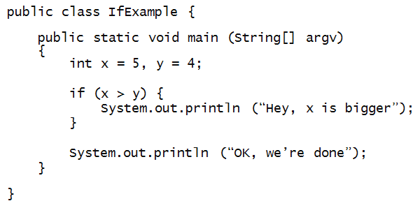
Activity 7:
In MyIfExample.java,
add an additional println right below the "Hey, ..." println.
Compile and execute the program. Then, change
the value of y to 6 and compile/execute.
What is the output?
About the if-statement:
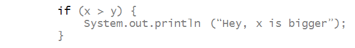
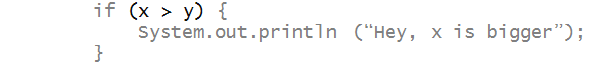

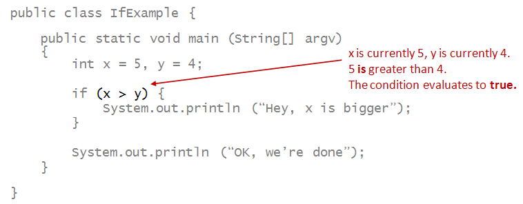
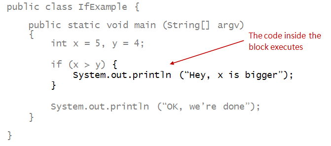
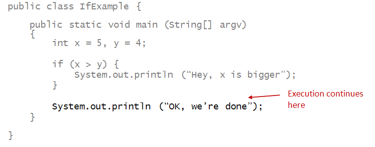
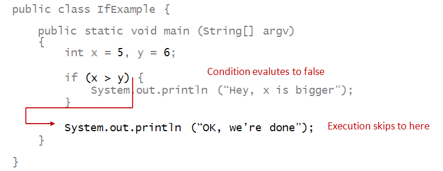
int s = 0;
for (int i=1; i<=5; i++) {
s = s + i;
}
if (s < 15) {
System.out.println ("Less than 15");
}
System.out.println ("End");
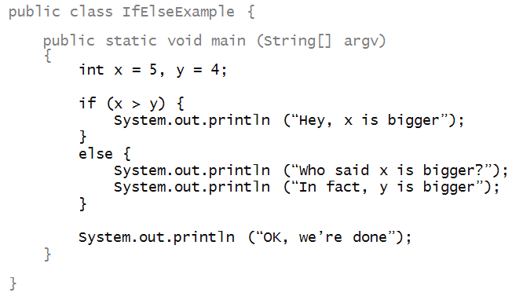
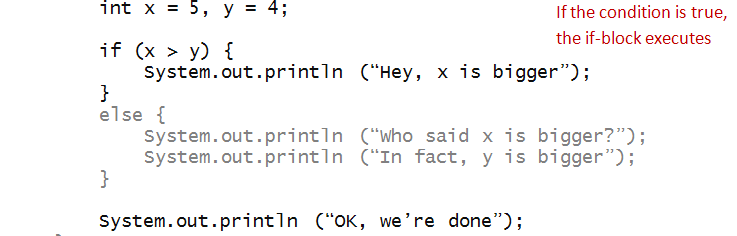
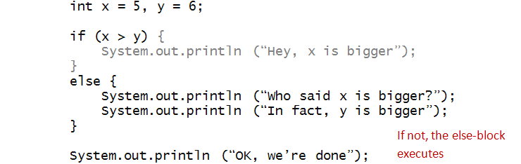
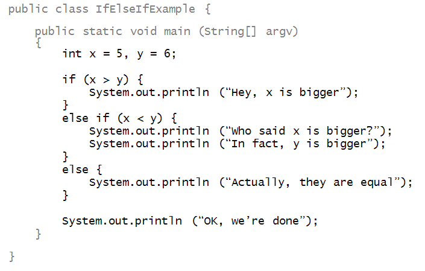
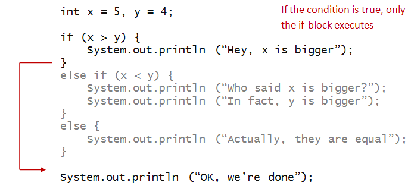
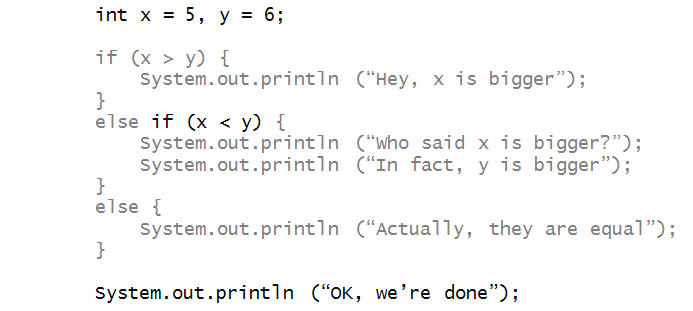
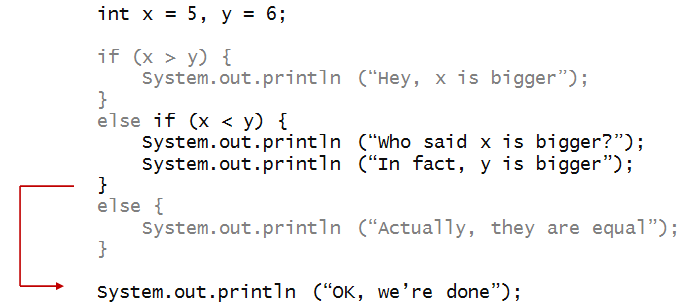
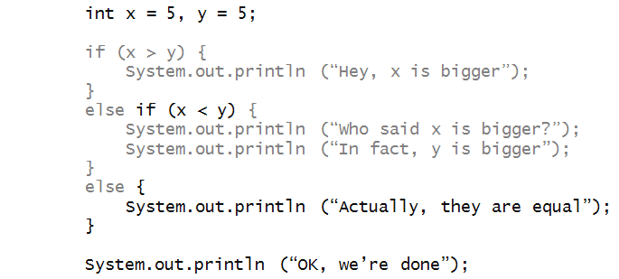
(x < y) // Strictly less than.
(x <= y) // Less than or equal to.
(x > y) // Strictly greater than.
(x >= y) // Greater than or equal to.
(x == y) // Equal to.
(x != y) // Not equal to.
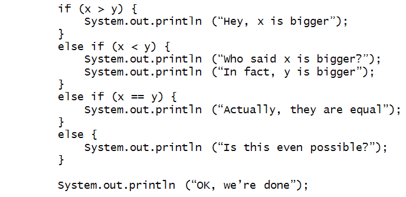
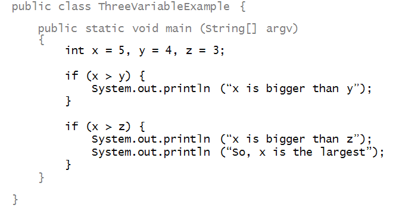
Can you alter the program (in MyThreeVariableExample.java) to make it work?